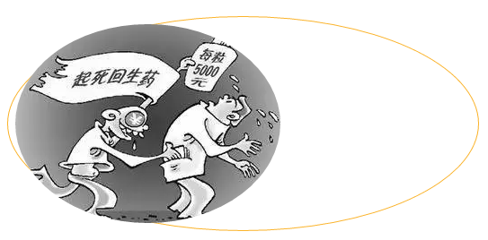

| 药品相关知识你知道吗 |
| 平安校园 2017-09-25 |
|
药品安全与我们生活息息相关，感冒发烧怎么办？突然中暑怎么办？急性腹泻怎么办？让我们一起去了解相关知识把！ 一、怎样理解药品说明书上的标识
绝大多数的药品说明书上都印有“慎用”、“忌用”和“禁用”的事项，不懂医药的人对这三个词一般都不太好理解。这三个词总的是嘱咐吃药的人要注意，不能乱吃。这三个词语虽只有一字之差，但嘱咐的轻重程度却大不相同。 “慎用”提醒服药的人服用本药时要小心谨慎。就是在服用之后，要细心地观察有无不良反应出现，如有就必须立即停止服用；如没有就可继续使用。所以，“慎用”是告诉你要留神，不是说不能使用。比如利他林对大脑有兴奋作用，高血压、癫痫病人应慎用。 “忌用”，比“慎用”进了一步，已达到不适宜使用或应避免使用的程度。标明“忌用”的药，说明其不良反应比较明确，发生不良后果的可能性很大，但人有个体差异而不能一概而论，故用“忌用”一词以示警告。比如患有白细胞减少症的人要忌用苯唑青霉素钠，因为该药可减少白细胞。 “禁用”，这是对用药的最严厉警告。禁用就是禁止使用。比如对青霉素有过敏反应的人，就要禁止使用青霉素类药物；青光眼病人绝对不能使用阿托品。 二、怎么样识别假药 
一、包装 运用现代科技手段能够仿制正牌药品的包装，并可以达到以假乱真的程度。但是假药总会有种种痕迹表现，如包装上较为粗糙、色调较差、套色不佳、字迹模糊、文字说明中常出现错别字等，仔细辨别可见破绽。
二、气味 一些药品具有特殊的气味，如气味发生改变，有怪味或气味消失等，均应警惕是否假药。
三、外表 正品药品颗粒均匀，不易捻碎。假劣药品则颗粒大小不一，易褪色，易捻碎且捻碎后有淀粉样感觉。正品药品中的分散片口服能迅速溶解，假药分散片则溶解速度缓慢。另外，假劣药品在距其所标出的出厂日期不久或在其所标的有效期内，往往发生变色、粘连、松片、裂片、沉淀、发霉、腐败等变化。正规的针剂药品封口光滑，印字清晰，无沉淀混浊物。而假药往往封口粗糙，有毛刺，印字模糊。片剂可以从有无裂痕、黏边、变形、色泽是否光亮、大小是否规则等方面判断。冲剂则以是否结块、发黏来鉴别真假。
四、期限 经批准合法生产的正规产品应有明确的生产日期、使用年限以及使用限期内某些药品如出现沉淀、变色等情况时的处理。假药往往有生产日期而无使用年限，或有使用期限又无生产日期，甚至有时会两者均无注明。
五、说明 经批准合法生产的药品，其说明书内容准确，治疗范围限定严格，使用的方法、禁忌、毒副作用等，均有详细说明。宣称包治百病的往往是假药或违法宣传。
六、文号 药品批准文号就带有“药”字样,如“京卫药准字(1996)第105091号”为头。若批准文字为“京健食准字”或“京食准字”为开头则不属于药品。 三、用药不能盲从
药物本身的作用，要一分为二地看，它有治病的一面，同时也可产生不良反应，家庭用药须注意以下几点： （1）明确诊断，有的放矢。如发烧时先要查清原因，不要动不动就应用抗菌素。腹痛原因不明者，切忌打止痛针，否则不仅增加病人负担，更严重的是遮盖症状，延误病情。 （2）在明确诊断的同时，要了解其它并存的疾病及过敏史，例如老年哮喘病人要了解有无高血压史，否则选用肾上腺素治疗，可能会发生危险。心绞痛伴有支气管哮喘的病人，使用心得安，可加重支气管痉挛。患有慢性肝病的患者，应避免应用对肝脏有损害的药物，以防进一步损害肝脏，加重病情。对过敏体质及有过敏史的人，用药应特别慎重。如对青霉素、磺胺类药过敏的人，可选用其它抗菌药物。 （3）注意药物的相互作用。临床上联用两种或两种以上药物的目的，在于能取得更好的疗效。但是如果不考虑药物间的相互作用，就会使药物原有的作用降低，甚至产生不良反应。如磺胺嘧啶钠针剂加入葡萄糖液中，时间稍长即可析出结晶性沉淀；使用氨基甙抗生素时，如同时使用速尿或利尿酸，常可加重听神经的损害；氯丙嗪引起的血压过低，如用肾上腺素升压，不但不能使血压上升，反而使血压更加急剧下降。 （4）不可任意加大剂量或过早停药。病人治病心切，认为多吃药，病好的快，其实不然。如青霉素杀菌浓度以最低抑菌浓度的５－１０倍为佳，高于此浓度杀菌能力并不增加，反而会增加毒性反应。哮喘病人服氨茶碱，用量过大会使心跳加快。所以用药剂量，必须严格遵守医嘱。过早停药，也是治疗失败的重要原因。如治疗结核病需要长期服药，可是有些病人症状稍好一些就不再服药了。结果疾病好好坏坏，药物停停用用，疾病迁延不愈，这不仅浪费药物，而且会产生耐药性，增加治疗的难度。 |
|
|
|
|
|
|
|